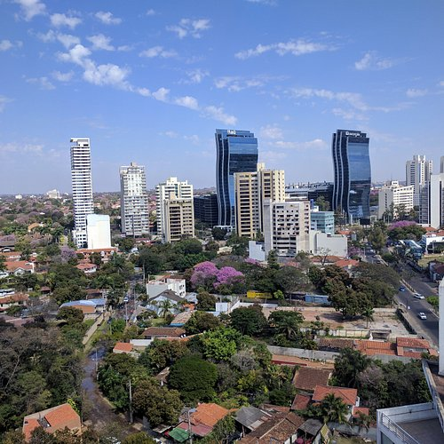

About me
Hello! My name is María Eugenia Báez Joubert, I am 32 years old and I am from Asunción, Paraguay. I love pasta and listening to music at least once a day. I was baptized in The Church of Jesus Christ of Latter-day Saints in July 2019. I work in a distribution center as customer service. When I don't work, I am a student and mother of an 8-year-old boy, so I love teaching children. I studied Psychology for 4 years and obtained a school teacher certificate after 3 years. The most important goal I currently have is to be able to enter a career that allows me to care for and educate my son from home, working remotely.
Asunción
Asunción, mother of 7 cities in South America, offers us places of cultural interest, gastronomy, heritage assets, as well as a lot of green space that enrich the heart of Paraguay. It is considered a "Gamma" category global city by the 2018 GaWC Study. The city is among the cheapest capitals in the world, and lately as one of the best cities for investment, both in construction and services, being thus one of the cities in the region with the most economic growth today.
